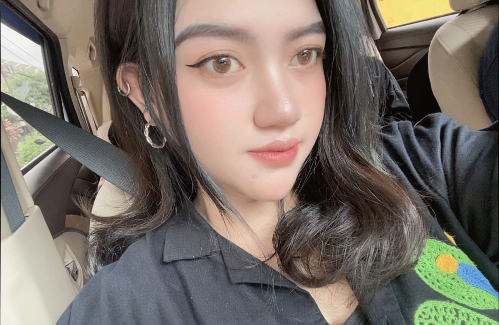

Hai, hai!
Aku Debora tapi panggil aja Deb, biar akrab. Aku cewek Bandung kelahiran 2003, dan sekarang lagi ngejalanin hidup sebagai mahasiswi Ilmu Komunikasi di UNIKOM. Umurku 21 tahun, masih muda, tapi udah lumayan banyak pengalaman seru yang bikin hidup makin berwarna.
Aku juga suka banget kulineran! Apalagi kalau lagi jalan-jalan, mata tuh otomatis nyari jajanan lokal yang unik dan enak buat dicoba. Mulai dari yang viral sampe yang tersembunyi di gang kecil, asal rasanya nagih.
So yeah, that’s a little piece of me. Santai aja, hidup tuh dinikmatin pelan-pelan, tapi jangan lupa bikin kenangan seru!